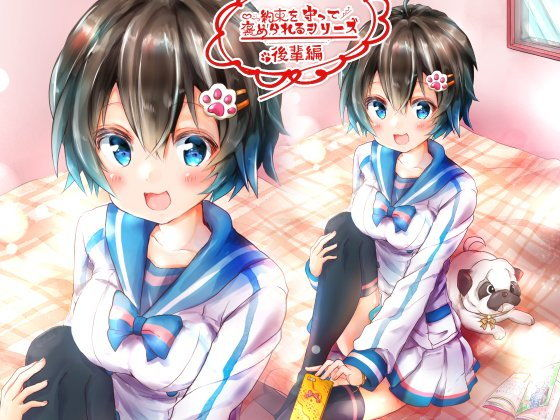

01
News
お知らせ
2026.09.03
サイト公式サイトを公開しました。
02
Blog
開発ブログ
03
Web Games
WEBゲームブラウザでそのまま遊べる小品。ダウンロードも会員登録も要りません。
いろわけタップして注ぐ
みちつなぎタップして回す
04
Games
ゲーム 全7作品DLsite・FANZA同人で頒布しています。うち6作品は成人向けのため、年齢確認を経てご覧いただけます。
05
Novels
小説 全16作品「小説家になろう」「カクヨム」で公開しているWEB小説です。両方に掲載している作品は、どちらからでもお読みいただけます。
06
About
このサイトについてゲーム制作サークル「ヒノガタリ」のサイトです。山賀秀明が企画・シナリオ・イラスト・Live2D・実装まで一人で手がけたゲームと、WEB小説をまとめて置いています。
ゲームはDLsite・FANZA同人で頒布、小説は小説家になろう・カクヨム・ノクターンノベルズで公開しています。ブラウザでそのまま遊べる小品もこのページに置いてあります。制作の過程や使っている道具については開発ブログに書いています。
山賀秀明yamaga syuumei
個人ゲーム開発者、小説家。企画からシナリオ、イラスト、Live2D、実装、リリースまでを一人で担当しています。VR作品、ストーリー重視のアドベンチャー、脱出ゲームが中心です。
画像生成AIやAIによるコーディング支援を制作に取り入れ、一人でも作品の量と質を落とさない作り方を探しています。このサイトもその実験のひとつです。
- X@SyuumeiYamaga
- DLsiteヒノガタリ
- 小説家になろう山賀秀明
- カクヨム山賀秀明